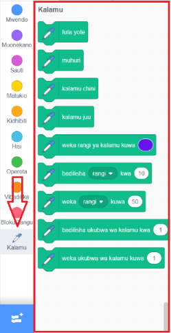

Kuchora maumbo kwenye Scratch au Quorum
Maumbo ni miongoni mwa vitu vinavyotumika kuunda michezo rahisi inayoshirikisha. Ili kuchora umbo, unaweza kutumia Scratch kwa kuongeza kiendelezi cha Kalamu, au kutumia Quorum kama programu mbadala inayofikika. Kuongeza kiendelezi cha Kalamu, fuata hatua zifuatazo:
1.
Bofya ikoni ya Ongeza kiendelezi iliyopo kona ya chini kushoto. Angalia au sikiliza maelezo ya Kielelezo namba 13 (a).
2.
Bofya kiendelezi cha Kalamu ili kuongeza kwenye jalada lako la programu. Angalia au sikiliza maelezo ya Kielelezo namba 13 (b).
(a)
(b)
Kielelezo namba kumi na tatu kinaonyesha namna ya kuongeza kiendelezi cha Kalamu katika Scratch.

Kielelezo namba 13: Kuongeza kiendelezi cha kalamu